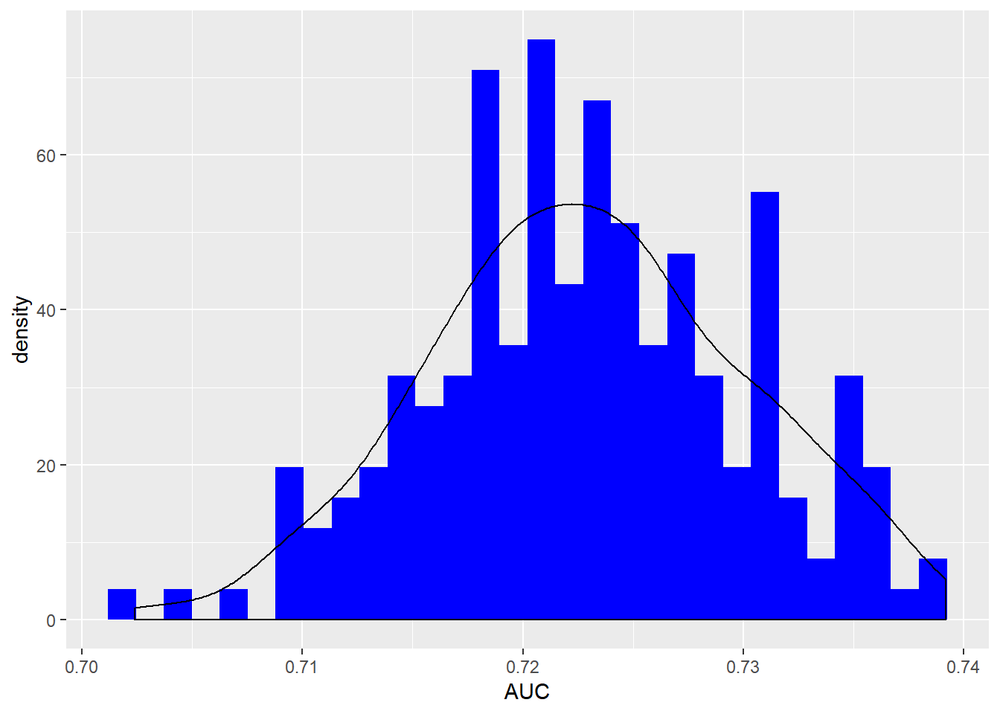

5 Conclusion
During this project, the dataset ScotsSec was analyzed. It contains the marks (1-10) obtained by a group of Scottish secondary school students, coming from a set of 19 schools, at a test.
The following analyses were performed:
- Relationships between the main variables in this model
- I recoded variable
attainfrom a discrete one with 10 terminations to a dichotomic one, which can be interpreted as passed/not passed the exam - There seems to be a clear correlation between
attain01andverbal, the result of a test conducted on the students before accessing the secondary school. The correlations betweenattain01andsexseems spurious, almost fully explained byverbal; theclassvariable, instead, if recoded into a factor, shows some correlation withattain01even whenverbalis taken into account.
- Fit of a bayesian logistic linear regression for
attain01:
- with only
verbalas a covariate (called base model): shows a nice fit, posterior predictive checks are good - adding a hierarchy over social class: improves model predictive performance
- adding a hierarchy over primary school provenence (with fixed slope): shows improved fit, but predictive check using LOOIC isn’t consistent with this;
- using informative prior reduces the number of “significative” coefficients, but LOOIC improves by a small margin over base model; still can’t beat model with
verbaland social extraction;
- using informative prior reduces the number of “significative” coefficients, but LOOIC improves by a small margin over base model; still can’t beat model with
- adding a hierarchy over secondary school with informative prior: intercepts are very small and most of them not significative, doesn’t improve LOOIC w.r.t. the base model
The best model considered the observations above, is the following:
\[ i\in \{1,...,3435\} \\ \text{attain01}_{i} \sim Bernoulli(\text{logit}^{-1}(\eta_i)) \\ \eta_i = \alpha_{g(i)} + \beta \cdot \text{verbal}_i \\ \alpha \sim N(0,10) \\ \beta \sim N(0,2.5) \\ g(i) \text{ maps unit } i \text{ to its class extraction } j,\ \ j\in\{1,2,3\} \]
## [1] "average statistic = 0.72290019272894"## [1] "sd = 0.00713371331505418"
5.1 Possible improvements
Possible improvements in analyzing this dataset:
Fit a logistic regression with Probit link instead of logit\(^{-1}\). The generic
stanfile for it is included in the appendix.- Consider the variable
attain. Its distribution is: - discrete with values from 1 to 10
multimodal with spikes at 2 and 10
To model directly this as a likelihood, two following approaches can be considered: + Model attain as a multinomial random variable with 10 possible outcomes:
\[ \mathbb{p} = [p_1, ..., p_{10}]^T,\ \sum_{j=1}^{10}p_j=1 \\ y \sim Multi(n, \mathbb{p}) \] One of the outcomes (e.g. 1) is elected as a baseline, and each of the other outcomes have their own linear predictor:
\[ \eta_j = X\beta^{(j)} \] Then
\[ \mathrm{B} = \{\beta^{(j)}\}_{j\in \{1,...,10\}} \\ \beta^{(1)}=0 \text{ baseline} \\ p(y|\mathrm{B}) = \prod_{j=1}^{10}\frac{\exp(\eta_j)}{\sum_{k=1}^{10} \exp(\eta_k)} \]
- Model
attainas a mixture of densities:
- Transform this variable as \(z_i = \frac{\text{attain}_i - 1}{9}\)
- Suppose it continuous
- Take its likelihood to be a mixture of \(K\) betas, each with its own \(\alpha_k, \beta_k\) parameters:
\[ \rho_1,...,\rho_k: (\rho_i\geq 0) \wedge (\sum_k \rho_k = 1) \\ p(y_i|\alpha,\beta,\rho) = \sum_{k=1}^K \rho_k\cdot p_k(y_i|\alpha_k,\beta_k) \]
- Fix priors on \(\alpha, \beta, \rho\).